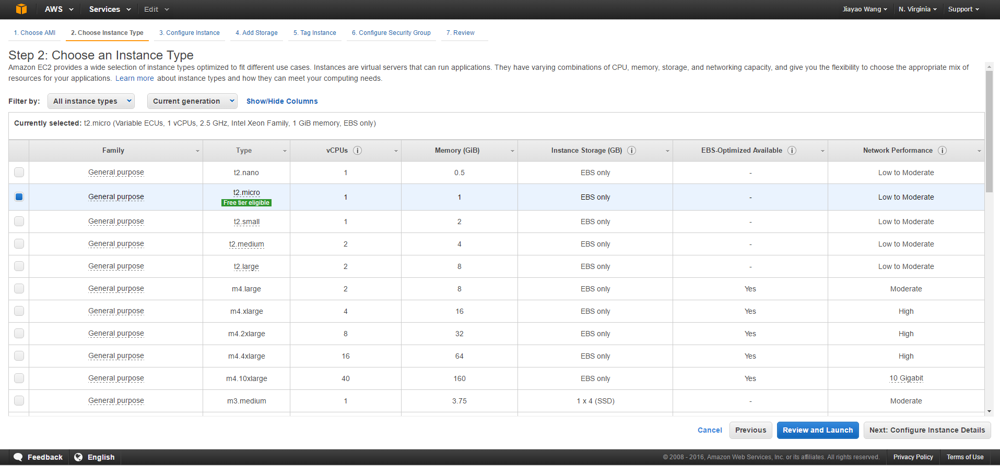

MongoDB is an open-source, cross-platform, document oriented database that provides, high performance, high availability, and easy scalability. MongoDB works on concept of collection and document.
Database: a physical container for collections. Each database gets its own set of files on the file system. A single MongoDB server typically has multiple databases.
collection: a group of MongoDB documents. It is the equivalent of an RDBMS table. A collection exists within a single database. Collections do not enforce a schema. Documents within a collection can have different fields. Typically, all documents in a collection are of similar or related purpose.
Document: a set of key-value pairs. Documents have dynamic schema. Dynamic schema means that documents in the same collection do not need to have the same set of fields or structure, and common fields in a collection's documents may hold different types of data.
| RDBMS | MongoDB |
|---|---|
| Database | Database |
| Table | Collection |
| Tuple/Row | Document |
| column | Field |
| Table Join | Embedded Documents |
| Primary Key | Primary Key (Default key _id provided by mongodb itself) |
| Database Server and Client | |
| Mysqld/Oracle | mongod |
| mysql/sqlplus | mongo |
I install MongoDB on AWS EC2
Json file of Proteins(from Uniprot), Genes(from HGNC), MIM phenotypes(from OMIM)
Use python get the data
sudo service mongodb start
sudo service mongodb start
sudo service mongodb restart
mongo
db.help()
db.stats()
use DATABASE_NAME
show dbs
db.collection.insert({"key":"value"})
db.dropDatabase()
db.createCollection(name, options)
show collections
db.collection.drop()
db.mim.find().pretty()
db.gene.find({'HGNC_id':'620'}).pretty()
db.protein.find( { "sequence.@length": {$gt:500} }, { 'accession': 1, 'sequence': 1 } ).pretty()
db.protein.find( { 'gene.name.#text':'KLLN' }, { 'reference': 1 } ).pretty()